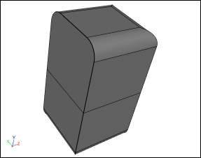
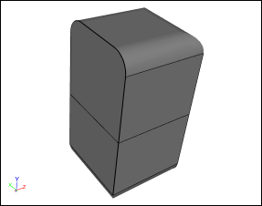
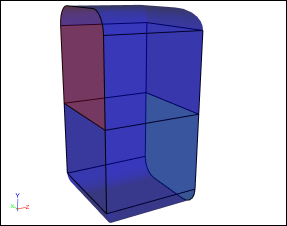
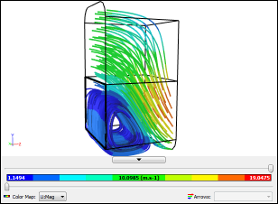

Overview: Geometry To Results
All Computer-Aided Engineering (CAE) analysis software, including Caedium, proceeds from geometry creation or import through physics specification to results analysis. This general process is reflected in the 3 major categories in the Caedium Tool Palette. Each phase has a specific role to play in an analysis, as outlined in this article. The simulation process description that follows assumes you are using Caedium Professional (Pro).
Prefer a screencast over words? Then try "Screencast of Flow Through a Pipe into a Box."
Geometry
All CAE analysis begins with a geometry model. The geometry could be imported from a Computer-Aided Design (CAD) system or be created directly in the CAE analysis tool. In Caedium Pro we cater for either approach or a combination of the two.

Geometry
The objective of the geometry stage is to produce a Boundary Representation (BRep) of the region for analysis. In the case of a structural analysis, the BRep should represent the solid material. In the case of a fluid flow or Computational Fluid Dynamics (CFD) analysis, the BRep should represent the region occupied by the fluid.
For external fluid flow analysis using the Caedium Panel Flow add-on, it is not necessary to define an outer boundary for your simulation.
To perform a simulation using the Caedium RANS Flow add-on you have to define a single flow volume that represents your fluid. In the case of an external flow around an object (e.g., a wing) you will need to subtract the object from the surrounding outer boundary (often a simple box).
Sometimes, although the geometry is a valid BRep, it may contain small features that are irrelevant to the simulation, such as sliver faces. These small features can cause increased computation run-times without any additional benefits. It is therefore worthwhile to simplify the geometry to suppress these features. Caedium Pro provides face and edge join tools to assist in this geometry simplification process.

Simplified Geometry
With a valid BRep geometry model that is free from irrelevant features, we can begin the physics specification phase.
Physics
Some CAE analysis tools require an intermediate meshing phase prior to physics specification, but Caedium Pro does not. Instead physics conditions in Caedium Pro are specified directly onto the geometry (by simple drag and drop operations), which avoids the tedium of re-specifying conditions if the mesh changes.
Typically you will need to assign substance (or material) properties, such as air or water, to the continuum (or volume) under analysis, and boundary conditions, such as walls, inlets and outlets, to relevant faces. For an external fluid flow simulation, you'll also need to specify the free-stream velocity for the continuum.

Physics Conditions: Blue = Walls, Red = Inlet, Green = Outlet
A major consideration in any simulation is the level of accuracy required. In turn, accuracy is in large part determined by mesh resolution. The higher the mesh resolution, typically the higher is the simulation accuracy, but at the cost of a slower turnaround time. The interplay between accuracy and turnaround time is a major consideration in any simulation. In Caedium Pro, the default accuracy is usually adequate to obtain a simulation result. If there is a particular area that you know requires extra resolution, then an accuracy constraint can be applied directly to the geometry in that region.
With the physics and accuracy constraints applied to your geometry model, it's time to proceed to the simulation results.
Results
Most CAE analysis tools have another intermediate phase between physics specification and results analysis where you explicitly run the simulation. Caedium Pro instead creates the mesh and runs the simulation after receiving a results request, such as a request to show the streamlines through a volumes.

Results: Streamlines colored by velocity magnitude
Caedium Pro, like most CAE analysis tools, uses 3D visualization techniques to create contours, iso-surfaces, vectors and streamlines from the fluid flow simulation results. Also you have the option to view 2D plots of various flow parameters, for example the pressure coefficient distribution over a span on a wing. In Caedium Pro, all the visualization tools are again applied directly to the geometry, so you don't have to re-create views or plots if the mesh changes.
Caedium Pro supports various 3D export formats (e.g., VRML) and image formats (e.g., JPEG), so you can share results in whatever manner you wish. Also you can share the entire simulation results in a Caedium project file (.sym) and have anyone view it for free using Caedium without any add-ons.
The End
So ends the journey from geometry to results. To see how easy it is to use Caedium Professional for fluid flow simulation, consider our 30 day free trial.
Feedback
Questions? Ideas? Problems?